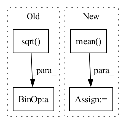

Pattern ID :24397
Before Change
if self.output_layer.bias is not None:
new_bias = torch.empty(n_classes_to_add)
fan_in, _ = nn.init._calculate_fan_in_and_fan_out(self.output_layer.weight)
bound = 1 / math.sqrt( fan_in) if fan_in > 0 else 0
nn.init.uniform_(new_bias, -bound, bound)
self.output_layer.bias = nn.parameter.Parameter(
torch.cat([self.output_layer.bias, new_bias], axis=0)After Change
)
if self.output_layer.bias is not None:
new_bias = torch.mean( self.output_layer.bias) .unsqueeze(1).T
if n_classes_to_add > 1:
new_bias = new_bias.unsqueeze(1).T.repeat(1, n_classes_to_add, 1).squeeze()
self.output_layer.bias = nn.parameter.Parameter(
torch.cat([self.output_layer.bias, new_bias], axis=0)
)In pattern: SUPERPATTERN
Frequency: 3
Non-data size: 4
Instances Fragment ID: 75718211
Project Name: online-ml/river-torch
Commit Name: 27f914a787bc844de5af4720487e2314f206960d
Time: 2022-09-26
Author: cedric.kulbach@googlemail.com
File Name: river_torch/classification/classifier.py
M Class Name: Classifier
N Class Name: Classifier
M Method Name: _add_output_features(2)
N Method Name: _add_output_features(2)
M Parent Class: DeepEstimator,base.Classifier
N Parent Class: DeepEstimator,base.Classifier
M File Name: river_torch/classification/classifier.py
N File Name: river_torch/classification/classifier.py
M Start Line: 300
M End Line: 310
N Start Line: 300
N End Line: 311
Before Change
objPts_w_cent = self.objPts.reshape((self.n, 3)) - center_objPts
u, s, vh = np.linalg.svd(np.matmul(objPts_w_cent.T, objPts_w_cent), full_matrices=True)
contPts_w_2 = contPts_w_1 + np.sqrt(s[0])*vh[0]
contPts_w_3 = contPts_w_1 + np.sqrt( s[1])* vh[1]
contPts_w_4 = contPts_w_1 + np.sqrt(s[2])*vh[2]
return np.array([contPts_w_1, contPts_w_2, contPts_w_3, contPts_w_4]).reshape(4, 3)After Change
Inputs are batched, with first dimension being the batch size.
// Select the center of mass to be the first control point
center = objPts.mean(axis=1)
// Use distance to center to select the other three control points
// svd
objPts_w_cent = objPts - center.unsqueeze(1) // center the object points, 1 is for boardcasting
full_svd = vmap(partial(torch.linalg.svd, full_matrices=True))
u, s, vh = full_svd(torch.bmm(objPts_w_cent.transpose(-1, -2), objPts_w_cent))
// produce points TODO: change to batch implementation
res = []
res.append(center)
for i in range(3):
another_pt = center + torch.sqrt(s[:, i])*vh[:, i]
res.append(another_pt)
return torch.stack(res, dim=1) Fragment ID: 75718195
Project Name: pypose/pypose
Commit Name: 762381a1eb57de9a7b7ffad5293e3bb33c859006
Time: 2023-02-24
Author: ztzhan1108@gmail.com
File Name: pypose/module/pnp.py
M Class Name: EPnP
N Class Name: EPnP
M Method Name: select_control_points(2)
N Method Name: select_control_points(1)
M Parent Class:
N Parent Class:
M File Name: pypose/module/pnp.py
N File Name: pypose/module/pnp.py
M Start Line: 108
M End Line: 118
N Start Line: 104
N End Line: 125
Before Change
set1_centre = set1.mean(-1).view(-1, 1)
set2_centre = set2.mean(-1).view(1, -1)
distance = (set1_centre - set2_centre).pow(2).pow(0.5).max(-1)[0].max(-1)[0]
delta_list = [distance / np.sqrt( 2 * (i + 1)) for i in range(kernel_num)]
bandwidth_list = [((2 * delta ** 2)).detach() for delta in delta_list]
return bandwidth_list
After Change
def calc_bandwidth(first_kernel, third_kernel, kernel_num=20, max_scale=2.0, min_scale=0.1):
// * kernel: [batch_size, particle_num, particle_num]
kernel_mean = torch.cat([first_kernel, third_kernel], dim=-1).mean( -1) .max(-1)[0]
particle_num = first_kernel.size(-1)
kernel_num
scale_list = list(np.linspace(min_scale, max_scale, num=kernel_num))
bandwidth_list = [(kernel_mean * scale).view(-1, 1, 1).detach() for scale in scale_list]
first_items = 0
third_items = 0
for h in bandwidth_list: Fragment ID: 75718210
Project Name: deligentfool/dqn_zoo
Commit Name: 1ac00bac8d92870064cdcf754b6e29278f14ae79
Time: 2020-11-04
Author: 1027660817@qq.com
File Name: MMD_DQN/mmd_dqn.py
M Class Name: AnonimousClass
N Class Name: AnonimousClass
M Method Name: calc_bandwidth(5)
N Method Name: calc_bandwidth(3)
M Parent Class:
N Parent Class:
M File Name: MMD_DQN/mmd_dqn.py
N File Name: MMD_DQN/mmd_dqn.py
M Start Line: 33
M End Line: 40
N Start Line: 18
N End Line: 33